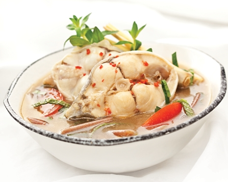

Canh chua cá bốp và măng

- Khẩu phần 4
- Chuẩn bị 10 phút
- Thực hiện 15 phút
Nguyên liệu
- 300gr cá bốp
- 100gr măng
- 2 đầu hành
- 1 gói Gia Vị Hoàn Chỉnh - Canh Chua
- 1 muỗng canh dầu olive
- 1/2 muỗng cà phê nước mắm
Hướng dẫn thực hiện
- Cá bốp và măng rửa sạch, để ráo nước.
- Đầu hành rửa sạch, xắt miếng nhỏ.
- Phi đầu hành với dầu ăn cho thơm. Đun sôi 3 chén (750ml) nước lọc.
- Cho cá và măng vào nồi, nêm với 1 gói Gia Vị Hoàn Chỉnh – Canh
Chua.
- Nấu đến khi chín rồi cho ra tô, dùng nóng với cơm trắng.